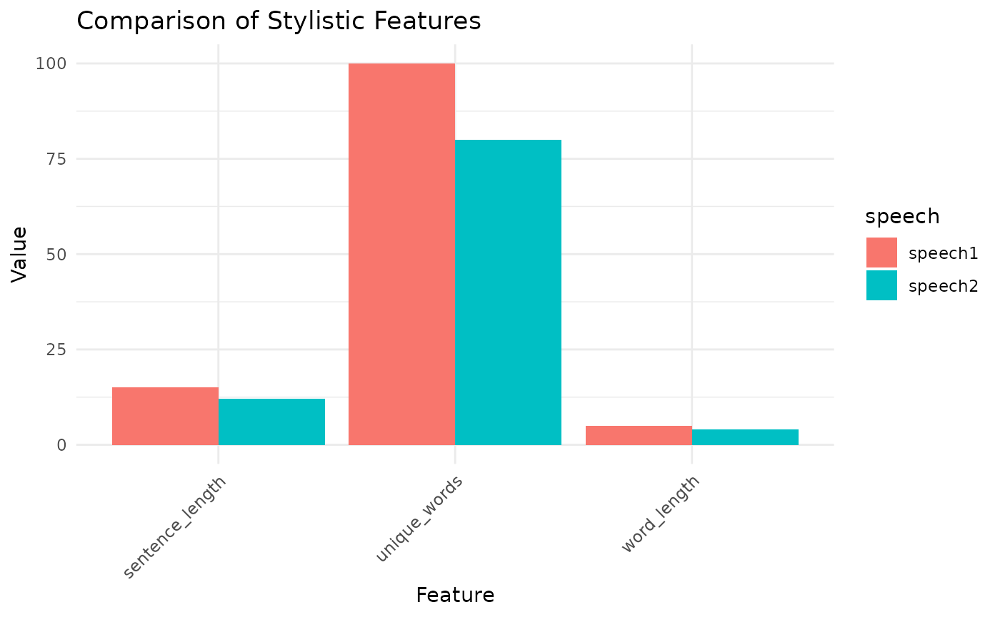
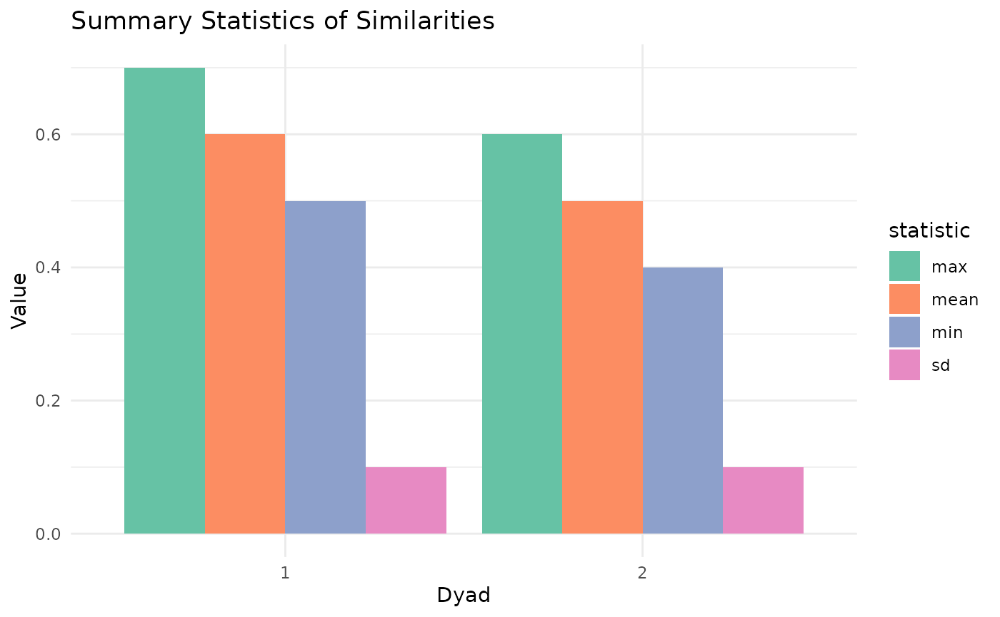
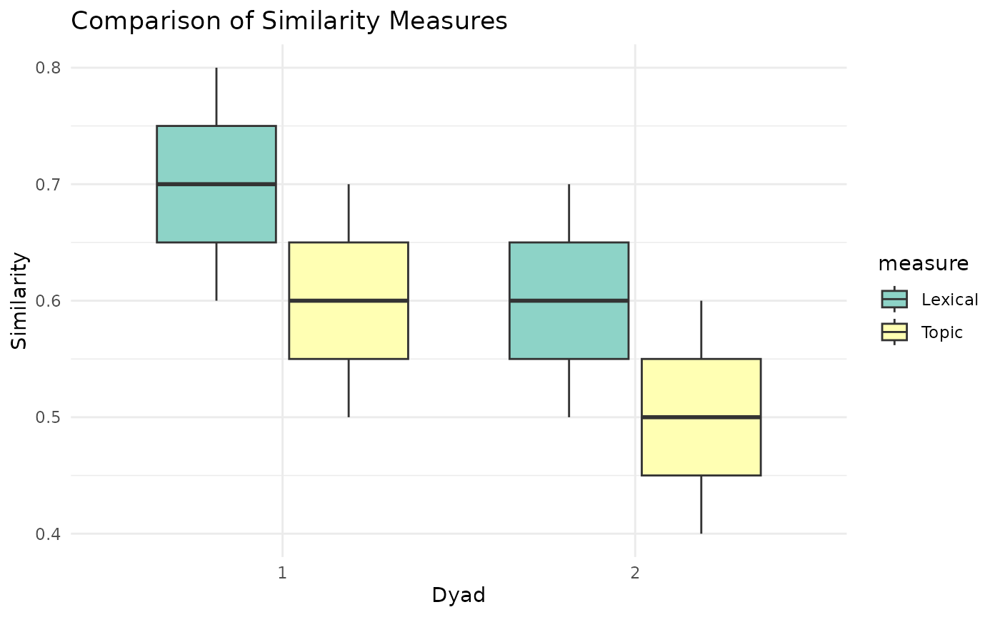

Utility Functions for Further Exploration and Visualization
Source:vignettes/utilities_functions.Rmd
utilities_functions.RmdIntroduction
This vignette demonstrates the usage of utility functions for speech similarity analysis. These functions are designed to complement the main similarity calculation functions and provide additional tools for visualization and analysis.
Combining Similarity Measures
The combine_sims function allows you to combine multiple
similarity measures into a single score:
sims <- list(topic = 0.8, lexical = 0.6, semantic = 0.7, structural = 0.9)
combined_score <- combine_sims(sims)
print(combined_score)
#> [1] 0.75
# With custom weights
weighted_score <- combine_sims(sims, weights = list(topic = 2, lexical = 1, semantic = 1.5, structural = 1))
print(weighted_score)
#> [1] 0.7545455Comparing Stylistic Features
The compare_style function visualizes the comparison of
stylistic features between two speeches:
# Simulating the result of stylistic_similarity function
stylistic_result <- list(
text1_features = list(sentence_length = 15, word_length = 5, unique_words = 100),
text2_features = list(sentence_length = 12, word_length = 4, unique_words = 80),
overall_similarity = 0.85
)
compare_style(stylistic_result)
Generating a Comprehensive Similarity Report
The gen_sim_report function generates a comprehensive
report of all similarity measures:
speech1 <- "This is the first speech. It talks about important topics."
speech2 <- "This is the second speech. It covers similar subjects."
# Note: This function call might not work as-is because it depends on other functions
# that are not defined in the utility files. For demonstration purposes, we'll create
# a mock report.
mock_report <- list(
similarities = list(
topic = 0.8,
lexical = 0.6,
semantic = 0.7,
structural = 0.9,
stylistic = 0.85,
sentiment = 0.75
),
combined_similarity = 0.75,
similarity_plot = plot_sims(list(topic = 0.8, lexical = 0.6, semantic = 0.7, structural = 0.9)),
stylistic_plot = compare_style(stylistic_result)
)
# Print the mock report
print_sim_report(mock_report)
#> Similarity Report
#> =================
#>
#> Individual Similarity Scores:
#> topic: 0.8000
#> lexical: 0.6000
#> semantic: 0.7000
#> structural: 0.9000
#> stylistic: 0.8500
#> sentiment: 0.7500
#>
#> Combined Similarity Score: %.4f
#> 0.75
#> Plots have been generated for overall similarities and stylistic features.
#> Use 'report$similarity_plot' and 'report$stylistic_plot' to view them.Working with Conversation Sequences
The conversation_sequence_utilities.R file provides
functions for analyzing similarity sequences in conversations:
# Combine similarity measures for a single dyad
sim1 <- list(sequence = c(0.8, 0.7, 0.9), average = 0.8)
sim2 <- list(sequence = c(0.6, 0.8, 0.7), average = 0.7)
combined <- combine_sim_seq(list(sim1, sim2))
print(combined)
#> $sequence
#> [1] 0.70 0.75 0.80
#>
#> $average
#> [1] 0.75
# Normalize similarity scores
scores <- c(0.2, 0.5, 0.8, 1.0, 0.3)
normalized <- norm_sim(scores)
print(normalized)
#> [1] 0.000 0.375 0.750 1.000 0.125
# Aggregate similarity sequence
seq <- c(0.5, 0.6, 0.7, 0.6, 0.8, 0.7, 0.9, 0.8, 0.7, 0.8)
aggregated <- agg_seq(seq, 3)
print(aggregated)
#> [1] 0.60 0.80 0.75
# Calculate correlation between similarity measures
cor_matrix <- cor_sim_seq(list(sim1, sim2))
print(cor_matrix)
#> [,1] [,2]
#> [1,] 1.0 -0.5
#> [2,] -0.5 1.0Analyzing Multiple Dyads
The conversation_multidyads_utilities.R file provides functions for analyzing similarities across multiple dyads:
# Create mock data for multiple dyads
similarities <- list(
"1" = c(0.5, 0.6, 0.7),
"2" = c(0.4, 0.5, 0.6)
)
# Plot similarity over time for multiple dyads
plot_sim_time(similarities, "Topic Similarity", "Similarity Score")
# Calculate summary statistics
stats <- calc_sum_stats(similarities)
print(stats)
#> mean sd min max
#> 1 0.6 0.1 0.5 0.7
#> 2 0.5 0.1 0.4 0.6
# Plot summary statistics
plot_sum_stats(stats, "Summary Statistics of Similarities")
# Compare multiple similarity measures
topic_similarities <- list("1" = c(0.5, 0.6, 0.7), "2" = c(0.4, 0.5, 0.6))
lexical_similarities <- list("1" = c(0.6, 0.7, 0.8), "2" = c(0.5, 0.6, 0.7))
comparison_df <- compare_sim_meas(
list(topic_similarities, lexical_similarities),
c("Topic", "Lexical")
)
print(head(comparison_df))
#> dyad Topic Lexical
#> 1 1 0.5 0.6
#> 2 1 0.6 0.7
#> 3 1 0.7 0.8
#> 4 2 0.4 0.5
#> 5 2 0.5 0.6
#> 6 2 0.6 0.7
# Plot comparison of multiple similarity measures
plot_sim_comp(comparison_df, "Comparison of Similarity Measures")